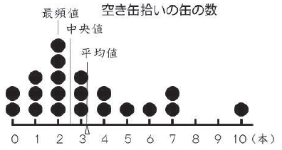
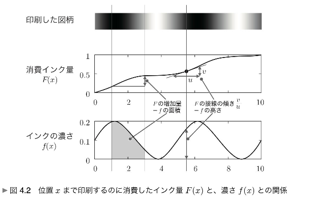

アニメーションに適したプロットの提案
本サイトでは、シミュレーションを美しく効果的に見せるために、いくつかの独自のプロットを使用しています。Rでシミュレーションを行ったときとは異なり、アニメーションであること、すなわち「発生させた乱数を次々に追加したり、乱数のリストを更新したりできること」を生かしたプロットです。
線香花火プロット
現行（2024年現在）の小学校6年生算数の教科書で「ドットプロット」（簡易的なヒストグラムの一種、文末注[1]）が扱われています。「線香花火プロット」は、これを連続型確率変数に適用したものです。特徴はつぎのとおりです。
- 表示範囲内の実数をドットでプロットします。指定された確率分布にしたがう乱数を生成し、生成順にプロットを描き足していきます。
- もっとも新しい乱数が赤いドットで大きく表示され、次にグレーになって次第に小さくなり、やがて消えます。結果として、画面上に見えているのは、最近生成された乱数10個程度です。
- 乱数が次々に生成されては消えていく様子が、線香花火の火花のように見えることから、線香花火プロットと命名しました。
- 「確率変数はぷるぷるしている」ことを、ドットの動き方でうまく表現できているのでは、と考えられます。
バーコードプロット
ドットプロットを描くのに、ドットではなく細い縦線を用いたプロットです。線香花火プロットでは乱数が生成されては消えていきますが、バーコードプロットでは生成された値をすべて蓄積していきます。特徴は次のとおりです。
- 表示範囲内の実数を細い縦線でプロットします。指定された確率分布にしたがう乱数を生成し、生成順にプロットを描き足していきます。
- いったん表示された縦線は基本的に消えず、縦線はどんどん増えていきます。ランダムな間隔で描かれた縦線がバーコードに似ていることから、バーコードプロットと命名しました。
- 縦線は細く、半透明で描かれますが、値が生成されやすい部分（確率密度が高い）では縦線が密になるため色が濃くなります。値が生成されにくい部分（確率密度が低い）では色が薄いままです。
- このように、値の発生しやすさを「色の濃淡」で表すことで、確率密度を視覚的に理解することができると考えられます。この発想は、確率密度とは「インクの濃さ」であるとした、平岡・堀（2009）に通じるものです（文末注[2]）。
- 縦線を描くときの色を自由に変えられるので、見ていて美しく、楽しいプロットです。
線香花火プロット、バーコードプロットのサンプル
サンプルプロットです。上段は標準正規分布、下段はカイ二乗分布（自由度1）です。プロット上でマウスをクリックすると一旦停止し、もう一度クリックするとまた動きます。乱数を5000個生成したら停止します。
注
[1]ドットプロット
ドットプロットとは数直線上の該当する箇所にデータを配置し，同じ値のデータがある際には積み上げて表したものである。ドットプロットを用いることでデータの散らばりの様子が捉えやすくなる。

（文部科学省 「小学校学習指導要領（平成29年告示）解説 算数編」 p.308、図も同じ）
ただし実数データでは、同一の値はほぼ出ないため、線香花火プロットでは、ドットを「積み上げて表す」表示のしかたは準備していません。
[2]確率密度とはインクの濃さである
細長いテープに、黒いインクを使ってグラデーションを印刷すると仮定します。印刷するときに紙が送られる速度が一定であるとすると、単位時間に使われるインクの量が多い時には色が濃く印刷され、単位時間に使われるインクの量が少ないときには色が薄く印刷されます。このとき、インクの濃さ（f）と、それまでに消費したインクの量（F）の関係が、確率密度と累積密度の関係として理解できる、としています。詳しくは、平岡・堀（2009）を参照してください。

平岡和幸・堀玄（2009）「プログラミングのための確率統計」オーム社、p.115